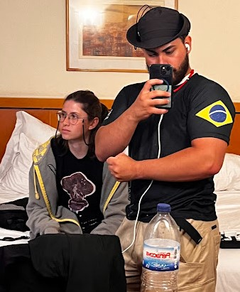

A Volta
08 de agosto de 2025
Fomos, participamos e finalmente o MOOT tinha chegado ao fim, apesar dos altos e (muitos)
baixos do acampamento, ele chegou ao fim e lá estávamos nós, cansados, exaustos mas sempre
contando mil e umas histórias uns pros outros, sem nada abalar nossa felicidade.